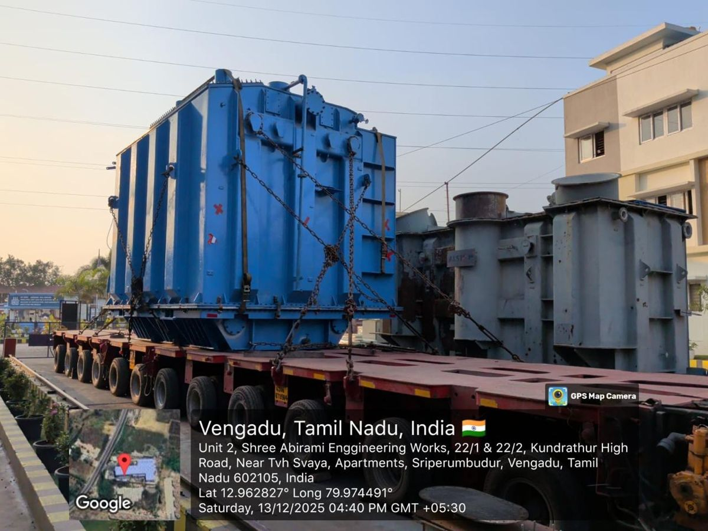
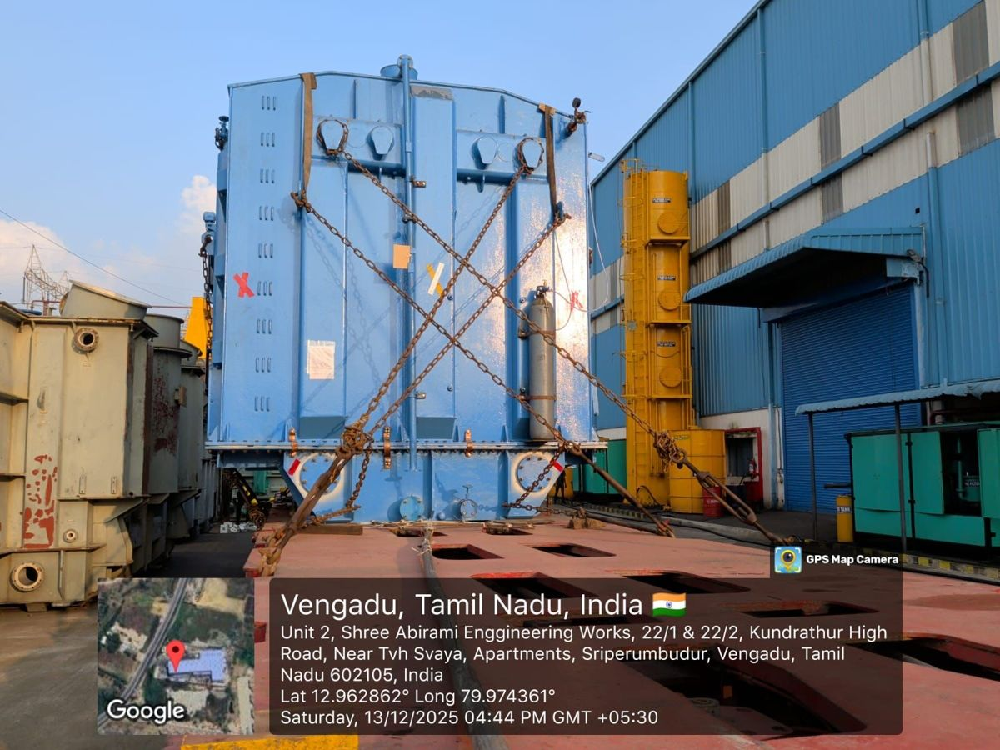

cargo physics, drawn simply
The Inverted Pendulum Effect
Why tall, heavy cargo wants to fall over, and why a small lean can turn into a big problem.
1Balance a pencil
Hang a weight on a string and push it. It swings, then comes back. Now stand a pencil on your fingertip. Lean it a little and it does not come back. It leans more, then falls.
The rule: if the weight is above the pivot, any lean grows. If it hangs below, any swing shrinks.
2Your cargo is the pencil
A transformer on a trailer is a heavy block sitting high on a narrow base. The tyres and deck edge are the fingertip. The weight is the pencil.

The centre of gravity (CG) is the one point where all the weight acts. The higher it sits above the deck, the more like a balancing pencil the cargo behaves.
3Two numbers decide it

Push the cargo sideways, as in a turn. It starts to rotate about its outer bottom edge, the red dot. It stays put as long as the CG is still over the base. Once the CG passes over that edge, gravity finishes the job.
tips when push ≥ b ÷ 2h (in g)
Half the base width, divided by the CG height.
A wide, low load has a big answer and is hard to tip. A narrow, tall one has a small answer.
4Push it and see
Change the CG height, the base width and the sideways push. The red dashed line is gravity through the CG. When it lands outside the pivot, the load goes over.
The lean is exaggerated so you can see it. Real loads tip earlier than this sums say, because tyres squash, the trailer rolls and the load can shift. Treat the number as the best case.
5Speed is the big lever
In a turn the push is speed² ÷ radius. Double the speed and the push is four times bigger.
20 km/h
around a 30 m bend gives about 0.10 g
40 km/h
around the same bend gives about 0.42 g
Try 0.42 g in the playground with the default load.
6How we stop it
Every fix either lowers the CG, widens the base, or keeps the push small.
-
Lower the CGRide the load as low as the platform allows. Every centimetre of height costs margin.
-
Widen the baseA wider footprint pushes the pivot edge further from the CG.
-
Tie it down in an XCrossed chains and straps, tight, from high points on the load to the deck. They stop sliding and hold the top from leaning.
-
Slow down in turnsKeep the push small. Speed counts four times over.
-
Level the deck, watch the roadA sloped road or a tilted deck moves the CG toward the edge before the turn even starts.
7Before you roll
tall + narrow + fast = pencil on a fingertip
A simplified teaching model. The transport engineer's own stability calculation and the method statement come first.